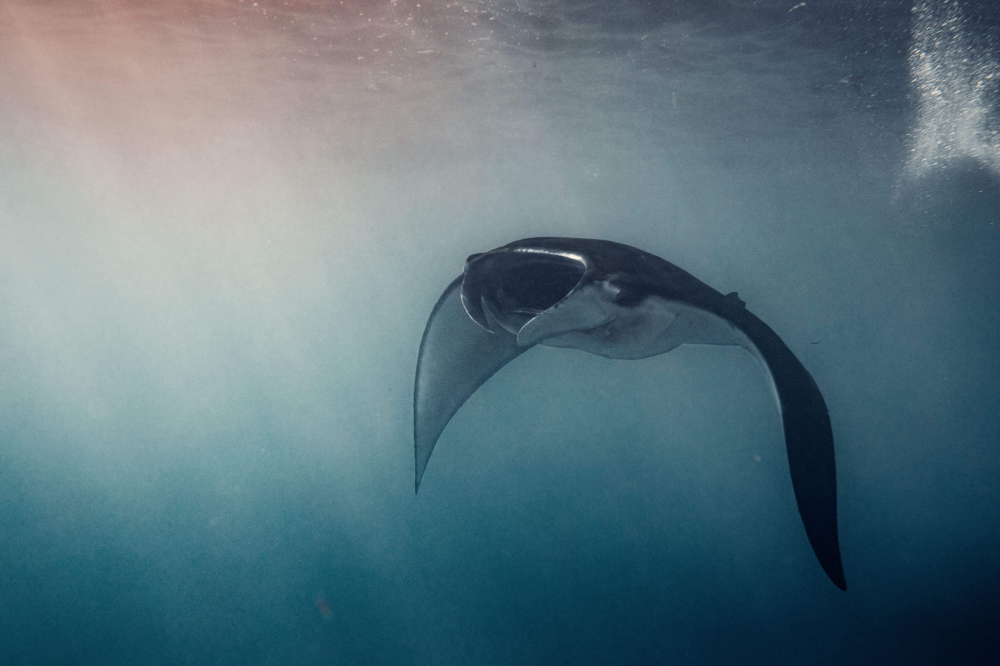

Wildlife & Water
Reefs, mantas and some of the most remarkable water around the islands.
Head out for snorkelling, reef exploring or a day on the water around Lembongan and Penida. Manta encounters may be possible when conditions allow, while scuba experiences can be arranged through selected premium local dive partners.
Seasonal mola experiences are for suitable scuba divers and depend on conditions.